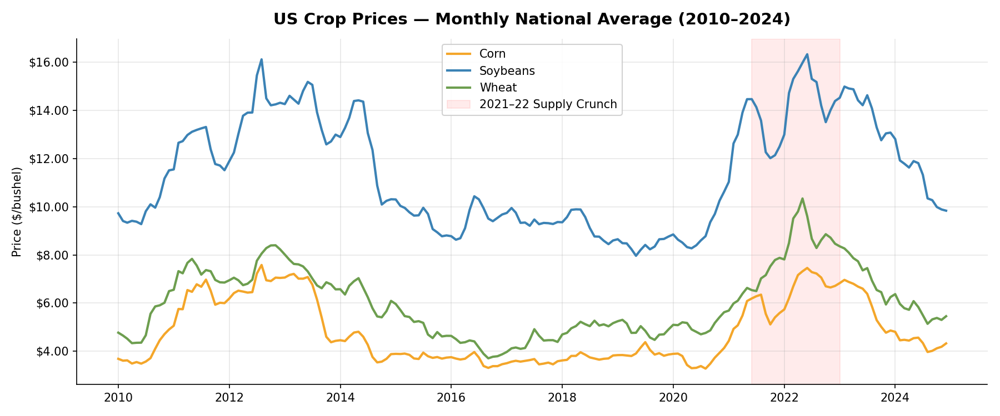
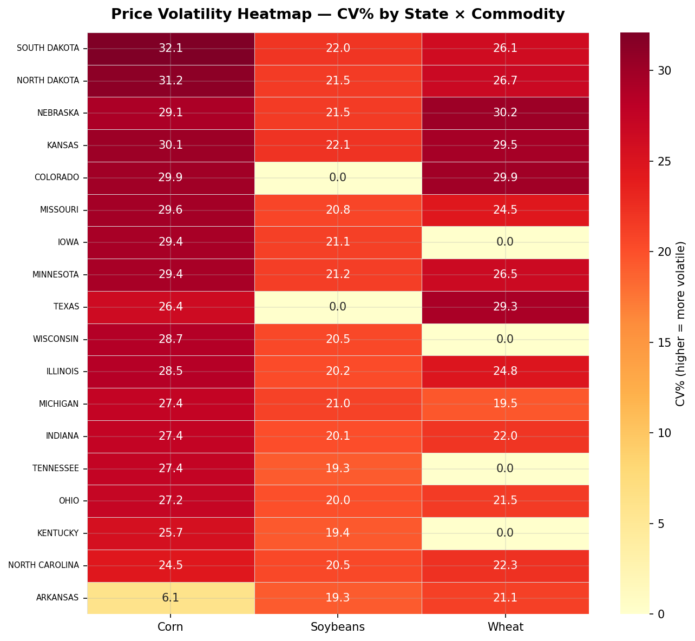
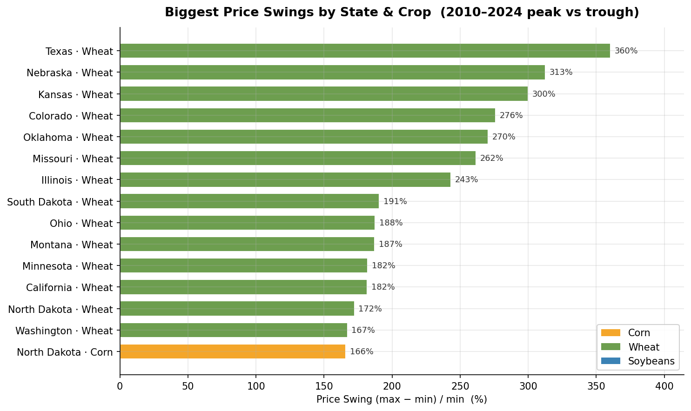
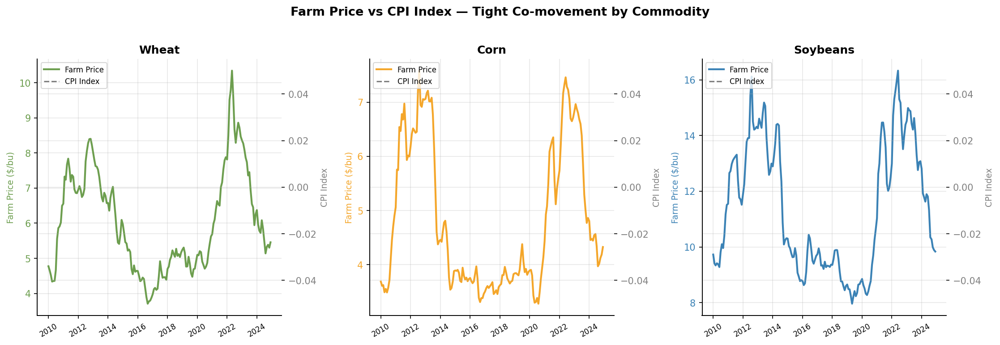
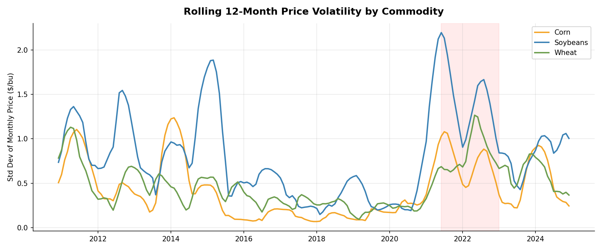
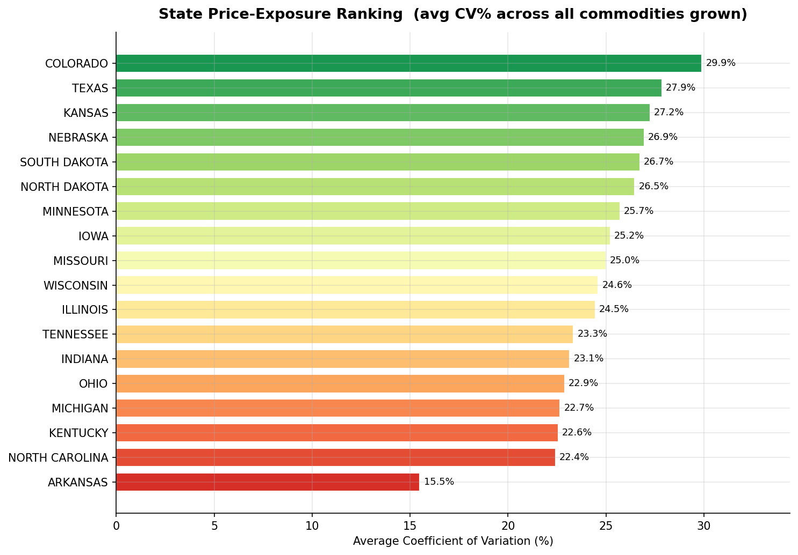
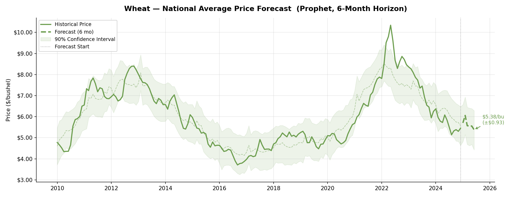
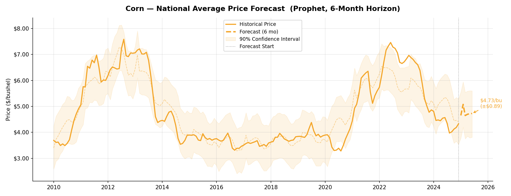
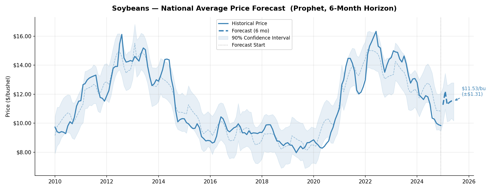

USDA NASS & FRED
Time-Series & Forecasting
2010–2024 Commodity Risk
State-level price exposure, CPI pass-through correlation, and 6-month Prophet uncertainty bands across soybeans, corn, and wheat.
01
10,000+ Monthly Observations
Interactive 6-Month Prophet Forecast
Historical national monthly prices (2010–2024), 90% confidence intervals, and 6-month forward horizon.
28.5%
Corn volatility (CV)
+17%
6-month soybean horizon
0.90–0.96
Farm price vs. CPI (r)
10,000+
Observations modeled
Shaded band = 90% confidence interval · dashed accent tail = 6-month Prophet forecast.
Nine Analytical Figures
Click any chart to inspect at full resolution.








